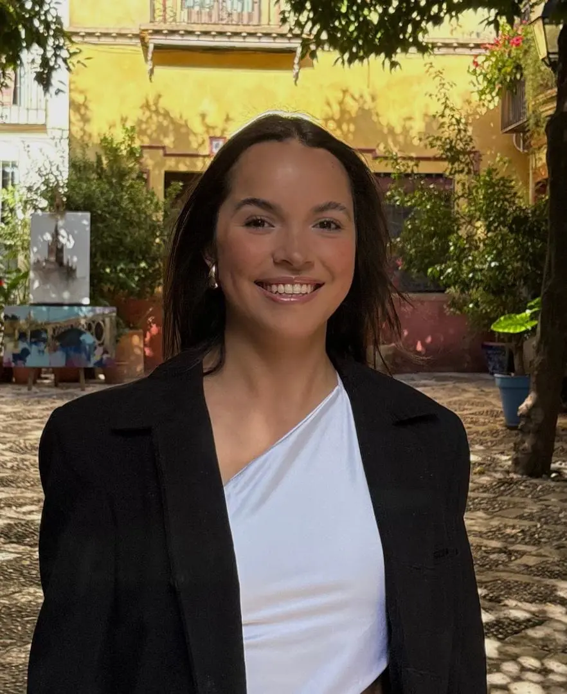

Perfil profesional
Hola! mi nombre es Bianca Allende y soy una apasionada diseñadora industrial y gráfica con experiencia en diseño y desarrollo web front-end, así como en UX/UI. Me especializo en crear soluciones innovadoras y funcionales que combinan estética y usabilidad.
Mi enfoque de diseño se centra en la experiencia del usuario, asegurando que cada proyecto no solo sea visualmente atractivo, sino también intuitivo y accesible. Tengo habilidades en diversas herramientas de diseño y desarrollo web, lo que me permite llevar mis ideas desde la conceptualización hasta la implementación.
Estoy constantemente buscando nuevas oportunidades para aprender y crecer en mi campo, y estoy emocionada por colaborar en proyectos que desafíen mis habilidades y me permitan contribuir con soluciones creativas y efectivas.